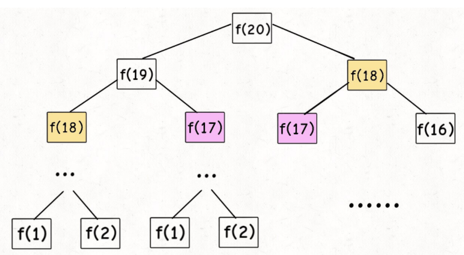
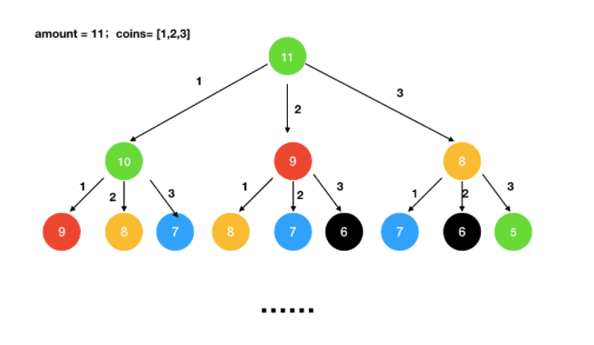

Dynamic Programming 解题框架：
1 2 3 4 5 6 7 # 初始化 base case dp[0 ][0 ][...] = base # 进行状态转移 for 状态1 in 状态1 的所有取值： for 状态2 in 状态2 的所有取值： for ... dp[状态1 ][状态2 ][...] = 求最值(选择1 ，选择2. ..)
一、斐波那契数列（重叠） 1、暴力递归 1 2 3 4 int fib (int N) if (N == 1 || N == 2 ) return 1 ; return fib(N - 1 ) + fib(N - 2 ); }

这种暴力递归存在着大量的重复计算，导致效率低下。
2、增加记录的递归解法 1 2 3 4 5 6 7 8 9 10 11 12 13 14 15 16 17 18 19 20 21 class Solution {public : int fib (int N) if (N < 1 ) return 0 ; vector <int > memo (N + 1 , 0 ) return helper(memo, N); } int helper (vector <int >& memo, int n) if (n == 1 || n == 2 ) return 1 ; if (memo[n] != 0 ) return memo[n]; memo[n] = helper(memo, n - 1 ) + helper(memo, n - 2 ); return memo[n]; } };
3、滚动数组 1 2 3 4 5 6 7 8 9 10 11 12 13 14 15 class Solution public int fib (int n) if (n < 2 ) { return n; } int p = 0 , q = 0 , r = 1 ; for (int i = 2 ; i <= n; ++i) { p = q; q = r; r = p + q; } return r; } }
二、凑零钱问题 题目描述：给定不同面额的硬币 coins 和一个总金额 amount。编写一个函数来计算可以凑成总金额所需的最少的硬币个数。如果没有任何一种硬币组合能组成总金额，返回 -1。
你可以认为每种硬币的数量是无限的。
1、暴力搜索
问题分析：暴力递归，每增加一个硬币，剩余金额相应减少硬币的值，count加一
当总金额减少到0时，比较记录res与最近结果的大小，取最小值
1 2 3 4 5 6 7 8 9 10 11 12 13 14 15 16 17 18 19 20 21 22 23 24 25 26 27 28 29 30 31 32 33 34 class Solution int res = Integer.MAX_VALUE; public int coinChange (int [] coins, int amount) if (coins.length == 0 ){ return -1 ; } findWay(coins,amount,0 ); if (res == Integer.MAX_VALUE){ return -1 ; } return res; } public void findWay (int [] coins,int amount,int count) if (amount < 0 ){ return ; } if (amount == 0 ){ res = Math.min(res,count); } for (int i = 0 ;i < coins.length;i++){ findWay(coins,amount-coins[i],count+1 ); } } }
这种方式直接使用递归，计算了很多重复的值，导致超出时间限制，题目不通过
2、带有记录的递归
使用数组 memo[ ] 来保存节点的值
memo[n] 表示钱币 n 可以被换取的最少的硬币数，不能换取就为 -1findWay 函数的目的是为了找到 amountamount 数量的零钱可以兑换的最少硬币数量，返回其值 int在进行递归的时候，memo[n]被复制了，就不用继续递归了，可以直接的调用
1 2 3 4 5 6 7 8 9 10 11 12 13 14 15 16 17 18 19 20 21 22 23 24 25 26 27 28 29 30 31 32 33 34 35 36 37 38 class Solution int [] memo; public int coinChange (int [] coins, int amount) if (coins.length == 0 ){ return -1 ; } memo = new int [amount]; return findWay(coins,amount); } public int findWay (int [] coins,int amount) if (amount < 0 ){ return -1 ; } if (amount == 0 ){ return 0 ; } if (memo[amount-1 ] != 0 ){ return memo[amount-1 ]; } int min = Integer.MAX_VALUE; for (int i = 0 ;i < coins.length;i++){ int res = findWay(coins,amount-coins[i]); if (res >= 0 && res < min){ min = res + 1 ; } } memo[amount-1 ] = (min == Integer.MAX_VALUE ? -1 : min); return memo[amount-1 ]; } }

此种方法将钱币n被换的最少的硬币值记录在memo[]中，之后再用到的时候就无需再次循环，直接调用。
3、动态规划 上面的方法采用记忆化搜索自顶而下 ，在此基础上，可以变成自底而上 的动态规划 。
上面的记忆化搜索是先从 memo[amonut-1] 开始，从上到下动态规划从 memo[0] 开始，从下到上
1 2 3 4 5 6 7 8 9 10 11 12 13 14 15 16 17 18 19 20 21 22 23 24 25 26 27 class Solution public int coinChange (int [] coins, int amount) if (coins.length == 0 ){ return -1 ; } int [] memo = new int [amount+1 ]; memo[0 ] = 0 ; for (int i = 1 ; i <= amount;i++){ int min = Integer.MAX_VALUE; for (int j = 0 ;j < coins.length;j++){ if (i - coins[j] >= 0 && memo[i-coins[j]] < min){ min = memo[i-coins[j]] + 1 ; } } memo[i] = min; } return memo[amount] == Integer.MAX_VALUE ? -1 : memo[amount]; } }